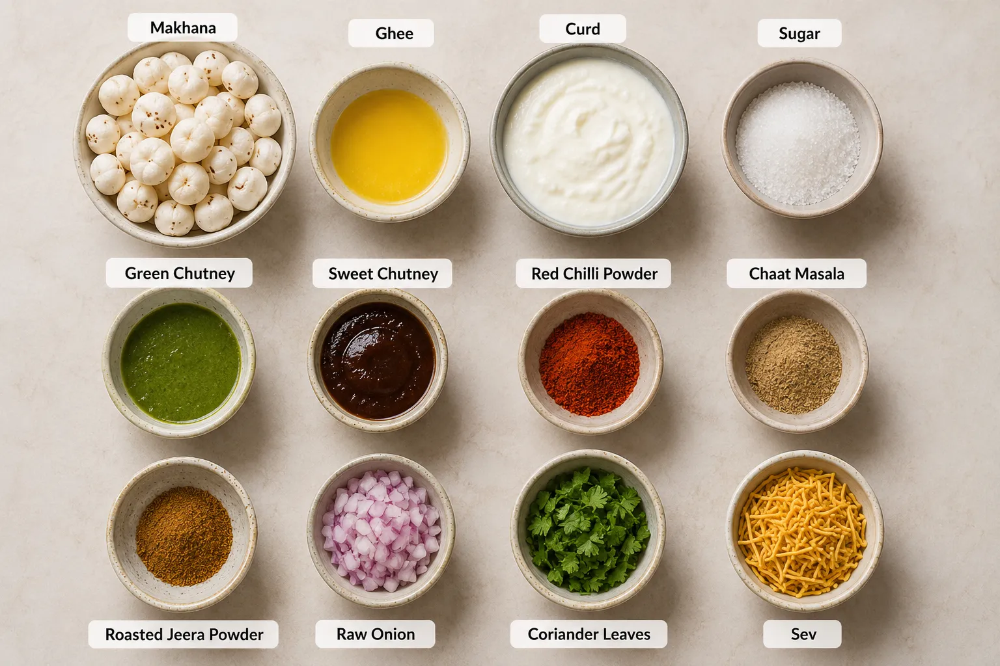
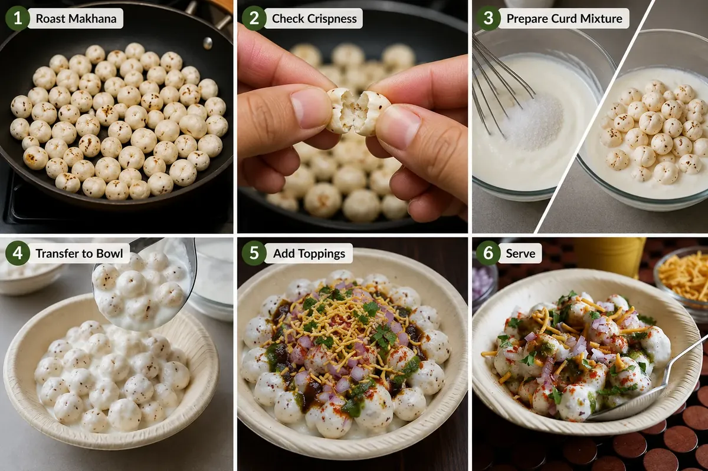

Makhana Chaat is a quick Indian snack made with ghee-roasted phool makhana, creamy curd, tangy chutneys and classic chaat spices. It combines the crunch of roasted makhana with fresh toppings for an easy snack that can be assembled in about 20 minutes.
Ingredients

Instructions
Heat ghee in a pan - add makhana and roast in low medium flame until crisp.Do not burn it so roast in low medium flame only.
Press and break for checking, if its crisp then it will break easily.Switch off and take the pan out from the flame.
To a mixing bowl add curd, sugar whisk well until smooth.Add roasted makhana to it.
Mix well.To the serving bowl:add curd makhana to it.
Sprinkle jeera powder,red chilli powder,chat masala powder on top, Add raw onion,coriander leaves and finally garnish with sev.
Serve immediately!

Notes
- If you are serving later then add makhana only while serving.
- You can make the chaats in batches while serving too.
- I have not added measurements for chutneys and spice powders as it can be as per your liking and taste.
Nutrition Facts
Makhana Chaat · Amount Per Serving (100 g)
| Nutrient | Amount | % Daily Value |
|---|---|---|
| Calories | 294 | — |
| Calories from Fat | 126 | — |
| Fat | 14 g | 22% |
| Saturated Fat | 7 g | 44% |
| Polyunsaturated Fat | 2 g | — |
| Monounsaturated Fat | 4 g | — |
| Cholesterol | 25 mg | 8% |
| Sodium | 371 mg | 16% |
| Potassium | 806 mg | 23% |
| Carbohydrates | 38 g | 13% |
| Fiber | 9 g | 38% |
| Sugar | 15 g | 17% |
| Protein | 10 g | 20% |
| Vitamin A | 4959 IU | 99% |
| Vitamin C | 3 mg | 4% |
| Calcium | 250 mg | 25% |
| Iron | 8 mg | 44% |
* Nutrition values are approximate and can vary depending on ingredient brands, quantities and preparation method. Percent Daily Values are based on a 2000 calorie diet.